Arcadia at Lavila (Nhà Bè): giá chào 92,3 triệu/m² cao hơn giá hợp lý khoảng 36%
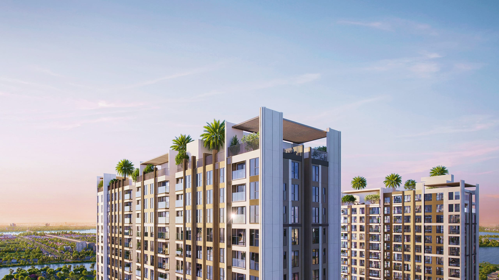
1. Tóm tắt nhanh
≈ 3.550 USD/m²
≈ 2.600 USD/m²
Mức: cao
Với căn 2 phòng ngủ khoảng 57,6 m² thông thủy, giá chào tương ứng khoảng 5,3 tỷ đồng, trong khi giá hợp lý khoảng 3,9 tỷ đồng, tức chênh khoảng 1,4 tỷ. Giá niêm yết ban đầu là 3.750 USD/m² (97,5 triệu/m²); sau chiết khấu thanh toán chuẩn 5% còn 3.550 USD/m². Ngay cả khi lấy mức ưu đãi lớn nhất trong báo cáo (3.330 USD/m², tức 86,6 triệu/m²), giá vẫn cao hơn giá hợp lý khoảng 28%, nên kết luận không đổi theo cách thanh toán.
2. Vị trí
Arcadia at Lavila nằm trên đường Nguyễn Hữu Thọ, trong khu đô thị Lavila (khoảng 60 ha) ở phía Nam Sài Gòn (khu Nhà Bè, quanh Phước Kiển). Đây là khu cao tầng đầu tiên trong Lavila và là dự án căn hộ đầu tiên của liên doanh Groupe PierreVal (Pháp) và Kiến Á Group.
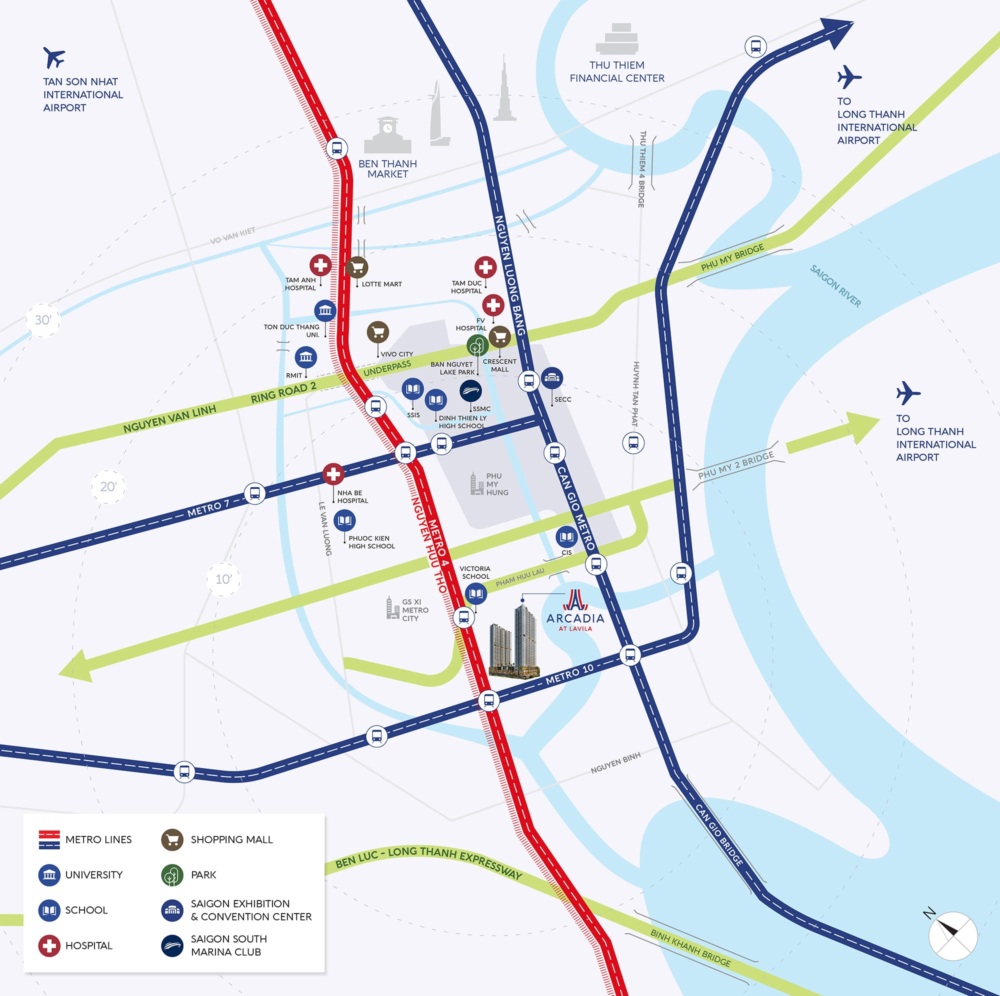
3. Sản phẩm
| Hạng mục | Thông tin |
|---|---|
| Chủ đầu tư | Liên doanh Groupe PierreVal (Pháp) và Kiến Á Group |
| Quy mô | 2 tháp căn hộ; số căn ghi khác nhau: 839 căn (báo cáo thị trường, một số báo) hoặc 925 căn (CafeLand) |
| Loại hình | Căn 1–3 phòng ngủ; 1 phòng ngủ ~38 m², 2 phòng ngủ ~56–61 m², 3 phòng ngủ ~66 m² (thông thủy); xem bảng bên dưới |
| Thiết kế | Archetype Group (concept kiến trúc, kiến trúc sư Jean-François Chevance) |
| Tiến độ | Động thổ khoảng tháng 6/2026; dự kiến bàn giao quý II/2029 (theo Vietstock) |
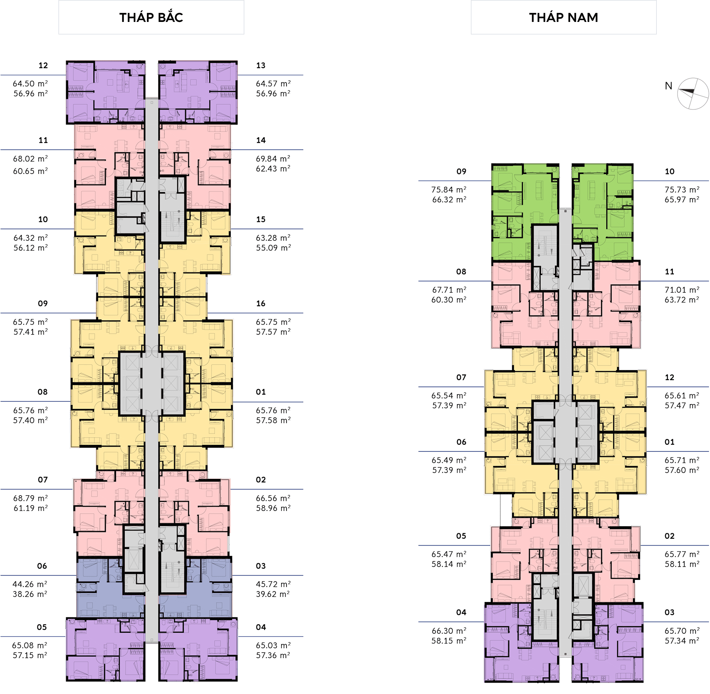
Bảng diện tích từng loại căn
| Loại căn | Vị trí (số căn theo tầng) | Tim tường (m²) | Thông thủy (m²) | Mặt bằng |
|---|---|---|---|---|
| 3 phòng ngủ | Tháp Nam: 09 | ~75,84 | ~66,32 | Hình 5 |
| 3 phòng ngủ | Tháp Nam: 10 | ~75,73 | ~65,97 | Hình 6 |
| 2 phòng ngủ Harmonie | Tháp Bắc: 10 | ~64,32 | ~56,12 | Hình 7 |
| 2 phòng ngủ Harmonie | Tháp Bắc: 01, 08, 09, 15, 16; Tháp Nam: 01, 06, 07, 12 | ~65,76 | ~57,58 | Hình 8 |
| 2 phòng ngủ Libre | Tháp Bắc: 11, 14 | ~68,02 | ~60,65 | Hình 9 |
| 2 phòng ngủ Libre | Tháp Bắc: 02, 07; Tháp Nam: 02, 05 | ~68,79 | ~61,19 | Hình 10 |
| 2 phòng ngủ Libre | Tháp Nam: 08, 11 | ~67,71 | ~60,30 | Hình 11 |
| 2 phòng ngủ góc | Tháp Bắc: 12, 13 | ~64,50 | ~56,96 | Hình 12 |
| 2 phòng ngủ góc | Tháp Bắc: 04, 05 | ~65,08 | ~57,15 | Hình 13 |
| 2 phòng ngủ góc | Tháp Nam: 03, 04 | ~66,30 | ~58,15 | Hình 14 |
| 1 phòng ngủ | Tháp Bắc: 03, 06 | ~44,26 | ~38,26 | Hình 15 |
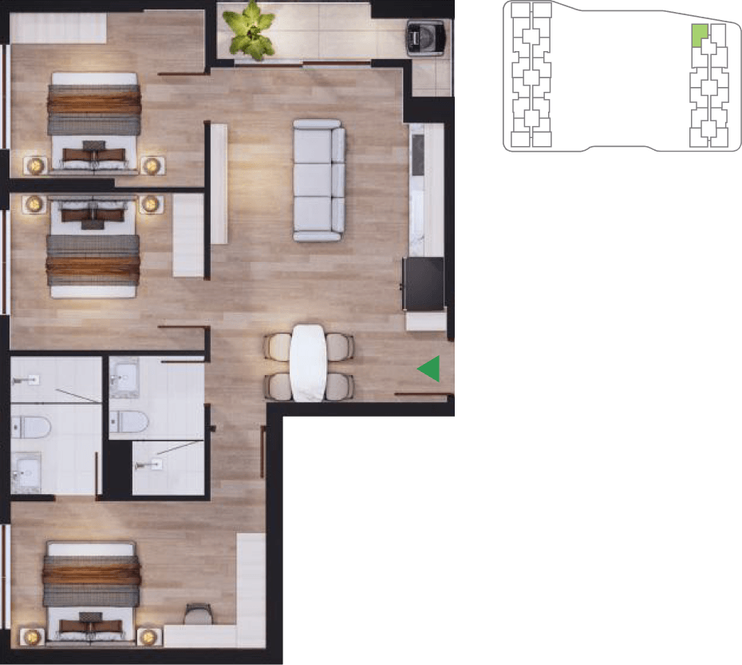
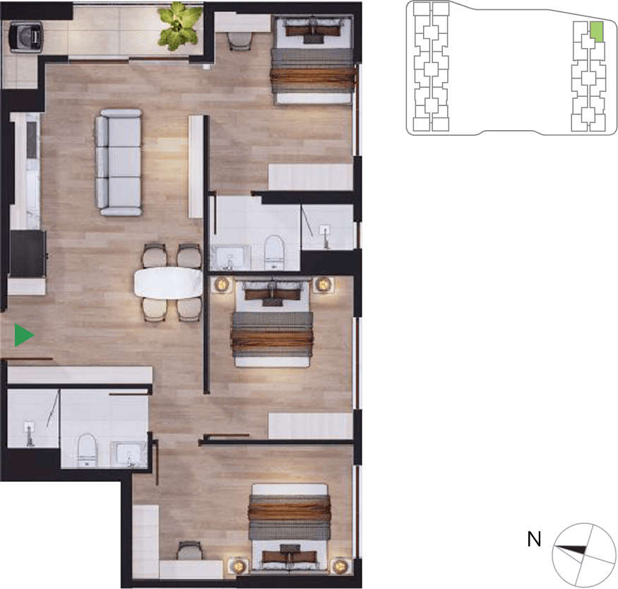
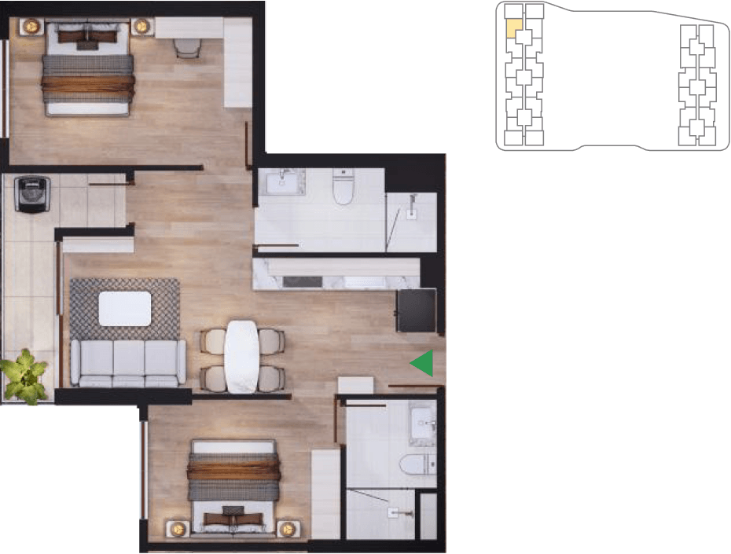
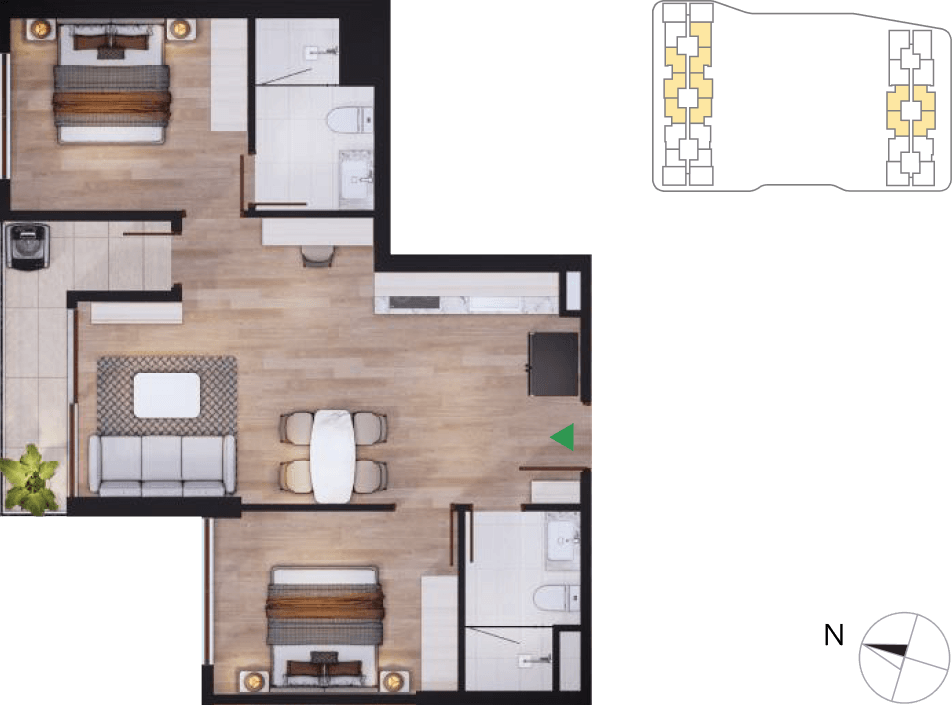
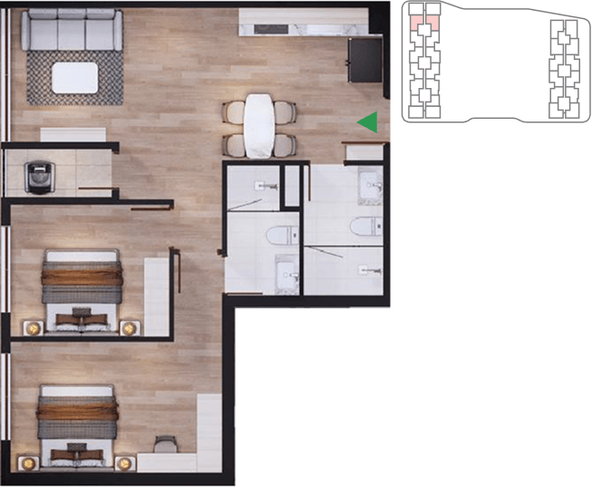
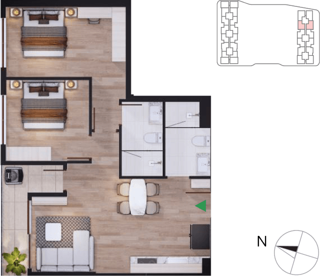
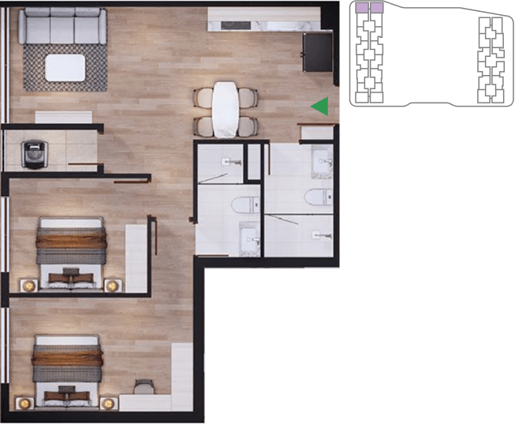
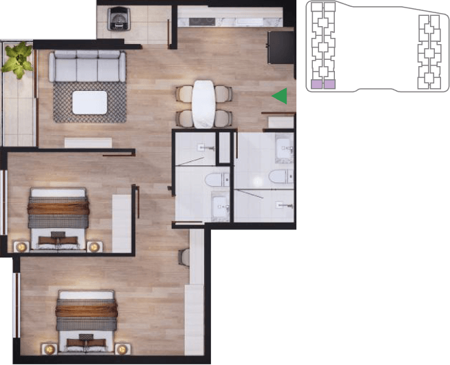
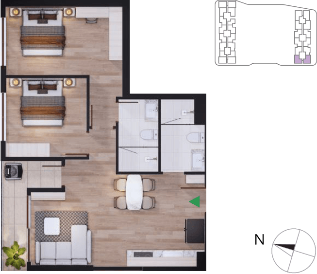
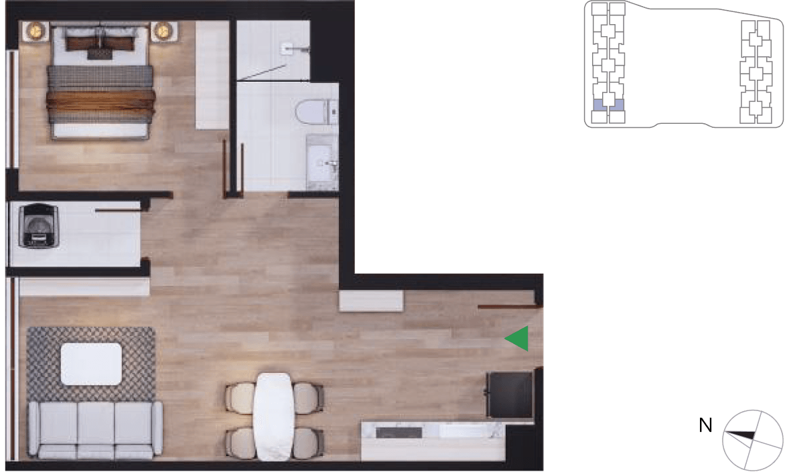
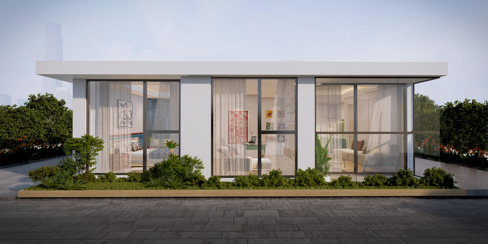
Mặt bằng tiện ích tầng trệt và cảnh quan
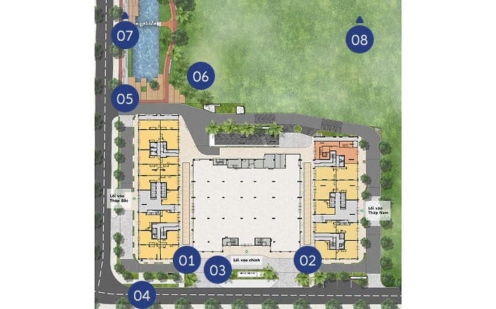
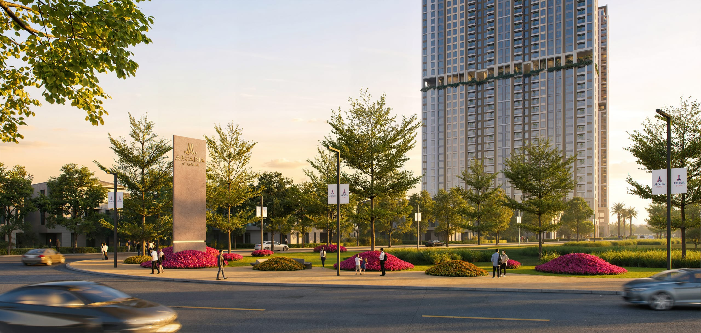
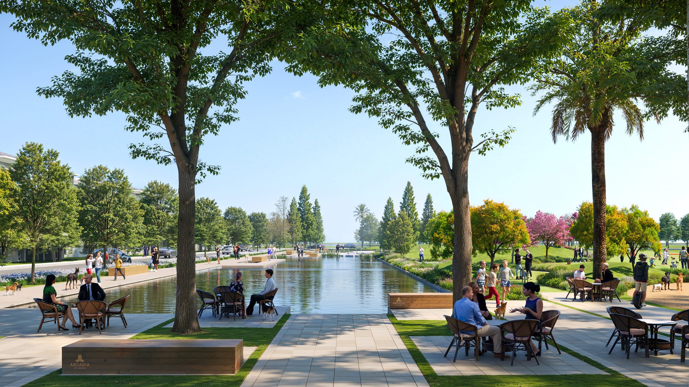
4. Kiểm tra giá và so sánh
Giá chào dùng trong bài là 3.750 USD/m² trừ chiết khấu thanh toán chuẩn 5%, tức 3.550 USD/m² (92,3 triệu/m²), tính trên diện tích thông thủy. Một số tin rao trên các sàn có mức khoảng 85–90 triệu/m² nhưng ghi giá chưa chiết khấu và không rõ tính theo diện tích tim tường hay thông thủy, nên không dùng làm chuẩn so sánh. Hai dự án đối chiếu cùng trục Nguyễn Hữu Thọ, đã hoặc sắp bàn giao:
| Dự án | Giá thị trường (USD/m²) | A | Giá điều chỉnh (USD/m²) | Triệu đồng/m² |
|---|---|---|---|---|
| Celesta Rise (nhận nhà 2023) | 2.723 | +7% | 2.530 | 65,8 |
| Essensia Sky (nhận nhà 2027) | 2.752 | +4% | 2.640 | 68,7 |
| Giá hợp lý (làm tròn 100 USD) | 2.600 | 67,6 |
Độ lệch giữa hai giá điều chỉnh chỉ khoảng 4,2% nên hai dự án đối chiếu khá đồng nhất.
Bảng điều chỉnh chi tiết
| Yếu tố | Celesta Rise | Essensia Sky | Căn cứ |
|---|---|---|---|
| Khoảng cách tới CBD | 0 | 0 | Cùng trục Nguyễn Hữu Thọ, chưa phân bậc |
| Giao thông | 0 | 0 | Chưa phân bậc |
| Quy mô đô thị | −5 | −5 | Arcadia nằm trong Lavila (~60 ha), lớn hơn khu của hai dự án đối chiếu |
| Tiện ích khu vực | +5 | +5 | Khu của hai dự án đối chiếu đã vận hành đầy đủ hơn |
| Uy tín chủ đầu tư | +5 | +5 | PierreVal có kinh nghiệm ở Pháp nhưng đây là dự án nhà ở đầu tiên tại Việt Nam, nên không cộng điểm |
| Pháp lý / tài chính | 0 | 0 | Mô hình cũ chỉ ghi "không có điểm đặc biệt"; bài này chưa chấm theo danh sách kiểm tra (xem mục 5) |
| Mặt bằng / tiện ích nội khu | +5 | +5 | Theo đánh giá trong báo cáo thị trường |
| Tuổi công trình | −3 | −1 | Năm nhận nhà so với 2029: Celesta Rise 6 năm, Essensia Sky 2 năm; 1 điểm % mỗi 2 năm |
| Quy mô dự án | 0 | −5 | Arcadia 839 căn; Celesta Rise 917 căn (0%), Essensia Sky 434 căn (nhỏ hơn khoảng một nửa) |
| View | 0 | 0 | Chưa chuẩn hóa định nghĩa; tạm tính 0 |
| Tổng điều chỉnh (A) | +7% | +4% | Dấu + nghĩa là đối chiếu tốt hơn Arcadia |
5. Kiểm tra nguồn cung & pháp lý
- Danh sách dự án đủ điều kiện bán nhà hình thành trong tương lai (Sở Xây dựng): chưa kiểm chứng.
- Bảo lãnh ngân hàng, hình thức sở hữu, hạn mức người nước ngoài: chưa kiểm chứng.
- Giấy phép xây dựng và quy hoạch 1/500: chưa kiểm chứng.
- Tiến độ thi công: có thông tin động thổ khoảng tháng 6/2026; chưa kiểm chứng với văn bản chính thức.
- Các mục chưa kiểm chứng chưa được cộng điểm rủi ro trong bài này. Nếu sau này kết quả xấu, giá hợp lý sẽ thấp hơn.
6. Kết luận
Ở mức giá chào hiện tại, Arcadia at Lavila đang cao hơn giá hợp lý khoảng 36%, và vẫn cao hơn khoảng 28% ngay cả với ưu đãi thanh toán lớn nhất. Người mua nên đối chiếu bảng giá chính thức, hỏi rõ cách tính diện tích và kiểm tra điều kiện pháp lý trước khi đặt cọc. Bài sẽ được cập nhật khi có thông tin.